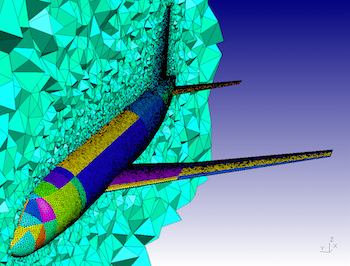

Free Software Activities in October 2018
Intro
Welcome to another monthly summary of my free software work. Currently I'm focusing on improving the state of packaging for FreeCAD and its ecosystem of dependencies and related packages in Debian Science. Additionally, I recently revived the FreeCAD Community Extras PPA as a way of staging these packages out to users for testing. If you are a FreeCAD user, developer, or simply a user of one of these packages, I would greatly appreciate your feedback and testing to identify bugs while my packages wait to make it into the Debian archive.
However, in the long-term, I plan to move away from spending so much time on Debian packaging and returning to FreeCAD core development, and a special not-so-secret related project: PostCAD, providing OpenCASCADE geometry & topology bindings plus CAD data and filetype format support for PostgreSQL, a la PostGIS. The goal is to build this out as a rich backend which FreeCAD can talk to about neat CAD stuff. It's a heaping of work, though, so I don't expect to have a public release until mid or late 2019.
I would like to find others who are interested in contributing to FreeCAD ecosystem packaging for mentorship. That way, my efforts are maintained by the community and the quality and availability of packages won't wane with my attention on them. Since FreeCAD participates in Google Summer of Code, this would be a great opportunity for interested university students to learn Debian packaging and improve the state of science & engineering software on Debian.
Anyway, on to my summary!
Debian News
This month, I officially became a Debian Maintainer. This is a basic level of formal membership in the Debian project, and it comes with limited upload rights to the archive. I can only upload packages for which I am marked as a maintainer, for example FreeCAD.
I took advantage of this to upload some improvements for FreeCAD which I had been sitting on. After a few tweaks, the package was ready for an upgraded upload from Experimental to Unstable, which begins the process of candidacy for Testing, the release pocket for the upcoming Debian 10.
Debian FreeCAD Gets Qt 5

Most important about this upload, though was that FreeCAD is finally being built with Qt 5 support. While Qt 5 had been working for quite a while, we were waiting on a dependency to be uploaded to Debian, PySide 2, which finally was uploaded this summer. Because this is a big switch to flip, any testing and reporting of bugs for this Debian package would be appreciated!
FreeCAD Package Structure Reorganization
One of the other major packaging changes for FreeCAD 0.17 is that the package is no longer a single, monolithic freecad package. We now have:
- a freecad metapackage, which installs the other packages
- common files and resources (e.g. images) in freecad-common
- freecad-runtime contains Python 2/3 compatible runtime files
- the executable built against Python 2, freecad-python2
- and the library files used by the executable, libfreecad-python2-0.17
There are several advantages to this approach. The first is that since freecad-common and freecad-runtime are just pictures, Python scripts, and the like, we can save space in the archive by only needing one copy of the package, instead of one for each supported architecture. For freecad-python2 and libfreecad-python2-0.17, one can see the advantage in the name: since these are Python 2 specific, we will soon be able to provide their Python 3 counterparts.
Ideally, by the time of the Debian 10 release, the FreeCAD 0.17 package will provide both Python 2 and 3 supported versions, and which one you want to use can be switched between using the alternatives system, which I will explain later in this post.
FreeCAD Python 3 Imminent
Like Qt 5, FreeCAD has supported Python 3 for quite some time. (Workbenches and 3rd party code are another story.) However, in Debian, a Python 3-enabled FreeCAD package is blocked by the pending upload of pivy 0.6. I helped coordinate the upstream release of this package but due to issues with its dependency Coin3D the upload is stalled until those issues are resolved.
Community Extras PPA - Early Packge Previews
Now that we have the Community Extras PPA, it serves as a convenient location for me to upload packages as soon as I have one completed and ready for testing. Here are my uploads this month.
Gmsh 4
Gmsh has released a major version upgrade, which includes removing the experimental Java API and introducing Julia bindings, although this package doesn't do anything with them. The current version in the Debian archives is 3.0.6.
This package is only available on Bionic (Ubuntu 18.04) due to its dependencies. I hadn't tried on Cosmic (Ubuntu 18.10) since I worked on this in the beginning of October and it wasn't released yet.
Calculix 2.14

CalculiX in Debian is currently several versions behind (2.11) so I got a request to package this. However, CalculiX actually spans several packages, but calculix-ccx, the solver, is the only one used by FreeCAD, so unlike the other packages, this one is not quite ready for Debian until the other ones are done as well, since they are separate source packages.
This package is available on Bionic and Xenial (Ubuntu 16.04).
Translated FreeCAD-Doc Packages
One of the big areas for improvement in FreeCAD is the state of its documentation, and I'm glad to announce that one big improvement is on its way. I have been working on a standalone freecad-doc package, since it was removed from the Debian archive for being derived from pre-compiled binary files. This package involves using a local synced copy of the FreeCAD Wiki text and images, and using the script that was used to generate the aforementioned binary files.
The main improvement my package offers is support for the two most complete translations of the FreeCAD wiki, French and Italian. This is accomplished by making freecad-doc a metapackage which depends on any one of freecad-doc-en, -it, or -fr being installed. Then, the relevant files in freecad-doc upon which freecad will call are in fact managed symlinks to the appropriate translations. The symlinks are managed by the DebianAlternatives system (see update-alternatives(1).)
In order to switch between translations if more than one is installed, you can run sudo update-alternatives --config freecad-doc. This will control the in-program help for FreeCAD, so when you click the "What's this?" button, the resultant help page will be the translated version.
Additionally, compiled PDFs of the FreeCAD help are provided for all three languages.
One result of the nature of this package is that it is quite large: each freecad-doc translated package weighs in about 300 MB so the combined size is about 1.2 GB, per Ubuntu distribution.
As a result, this package is only available on Bionic and Xenial.
PyCOLLADA 0.6, now with Python 3!

Another package which is fairly out of date in Debian (version 0.4 present), I decided to update it since pycollada is a dependency of FreeCAD and I am intrigued by the possibilities of the COLLADA (COLLAborative Design Activity) format. This allows for interchange with interactive 3D applications like Blender.
The big news with this package is that Python 3 support is now available, so I updated the source packaging to provide both Python 2 and 3 packages.
Again due to dependencies, it's only available on Cosmic and Bionic.
Sponsors
My work on Debian Science and FreeCAD is supported by my patrons at https://patreon.com/kkremitzki. Thank you all very much!
If you appreciate my work as described in this post, any level of support is greatly appreciated, including moral support!
Social Media
You can follow me on Twitter at @thekurtwk. I'm also currently working on a Twitch streaming setup, which I hope to have ready by the end of the year! I'll be trying out some live programming, engineering, and Linux gaming. You can find me at twitch.tv/kkremitzki.
Comments
Comments powered by Disqus